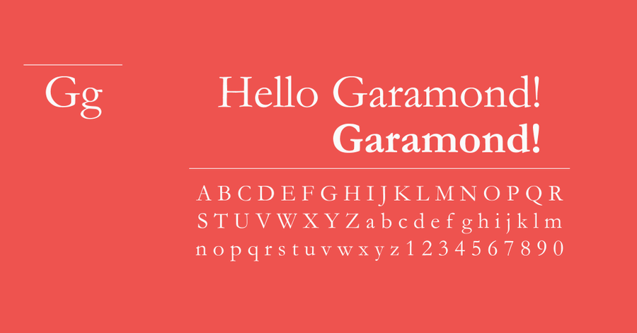
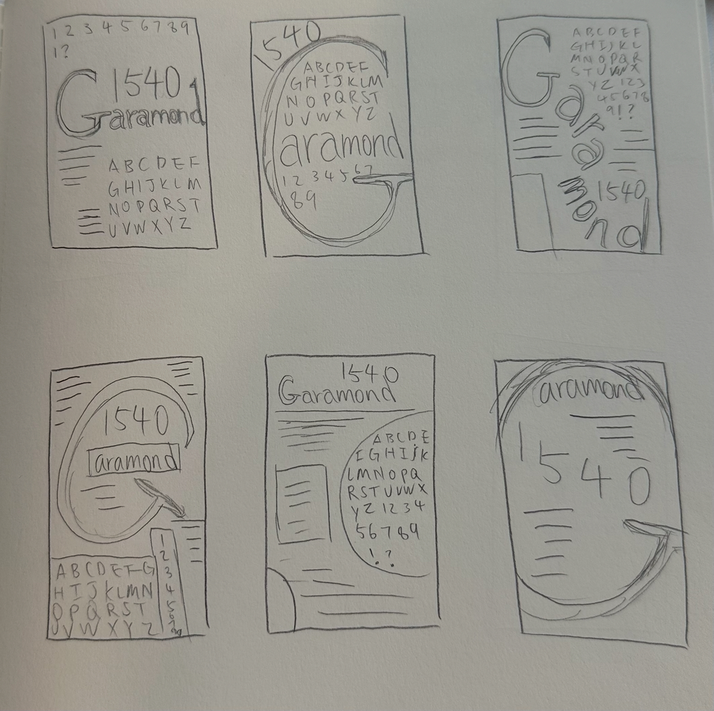
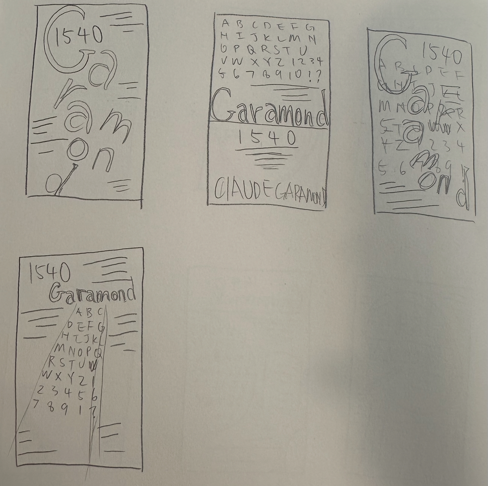
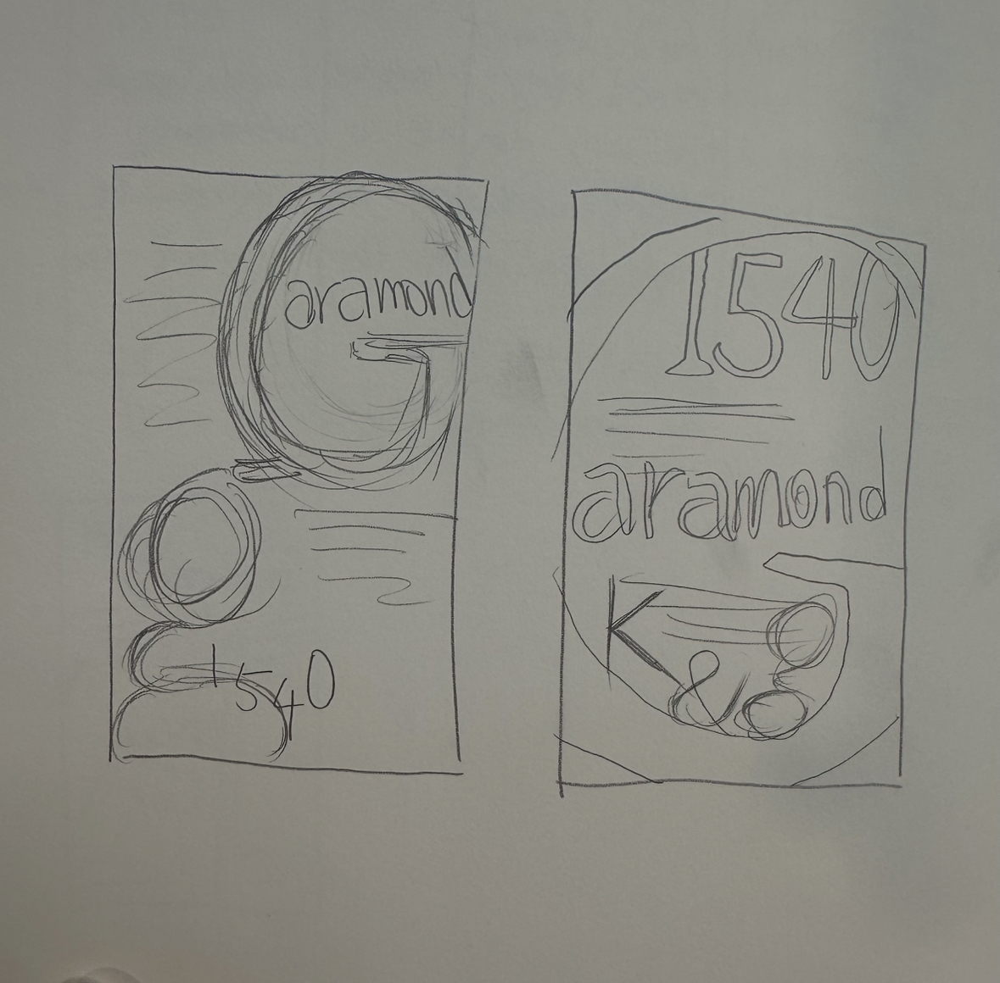
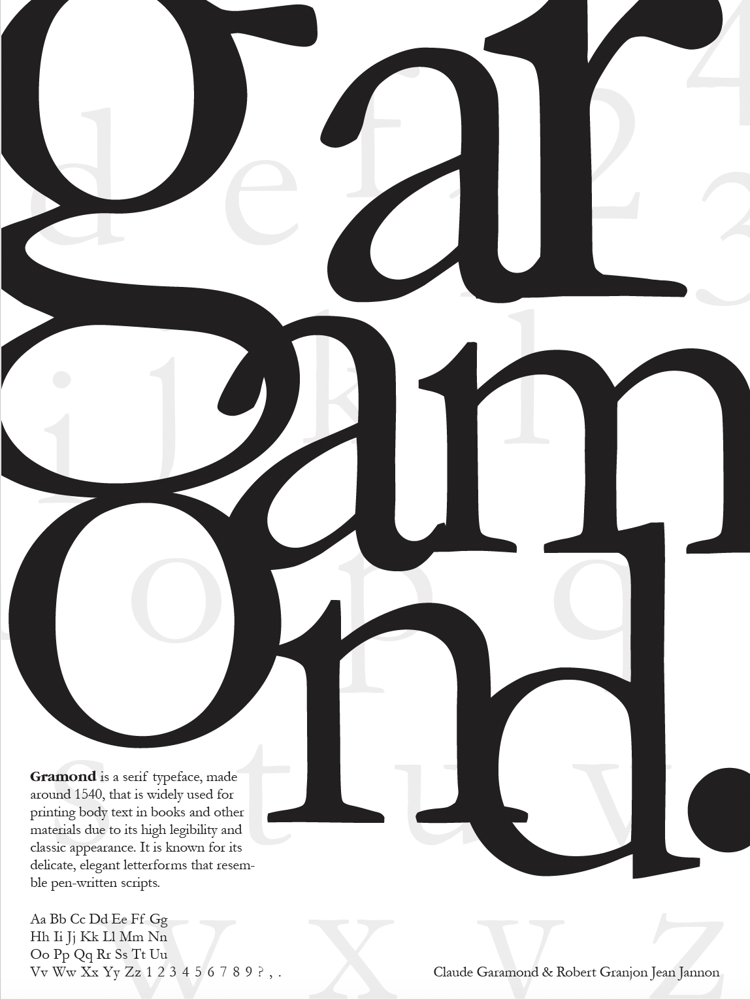
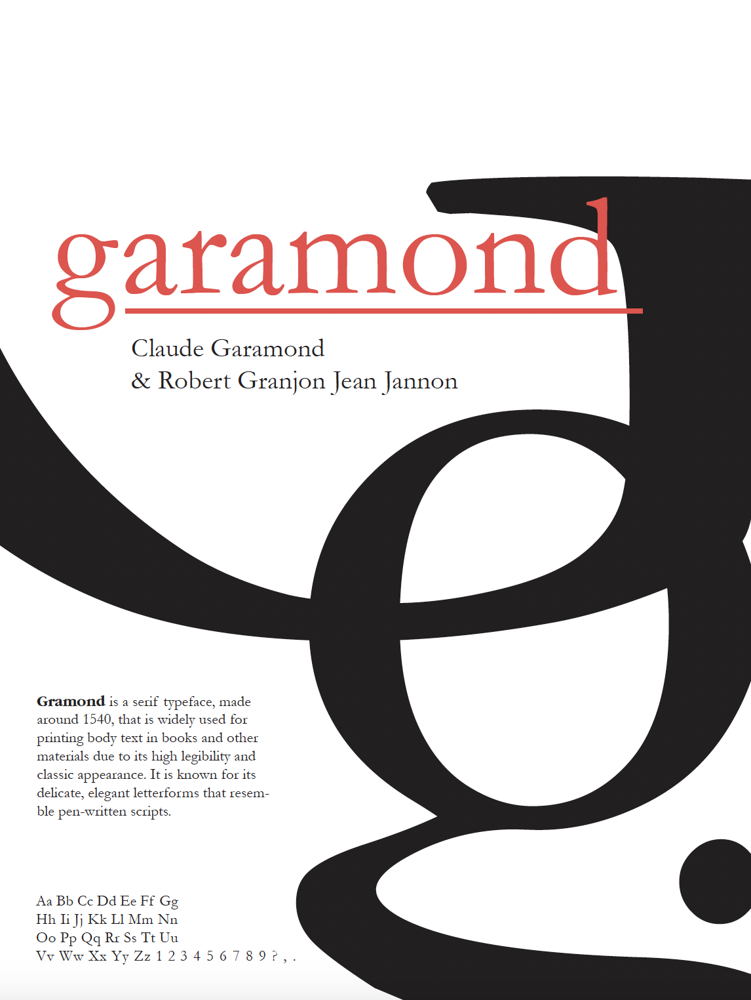
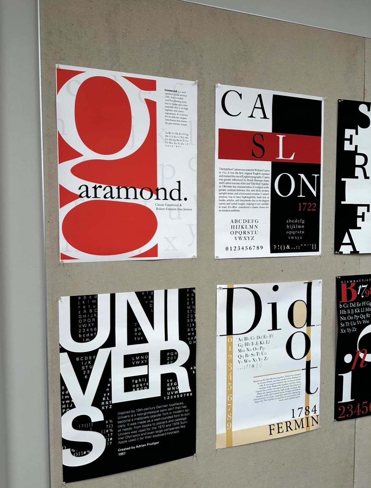
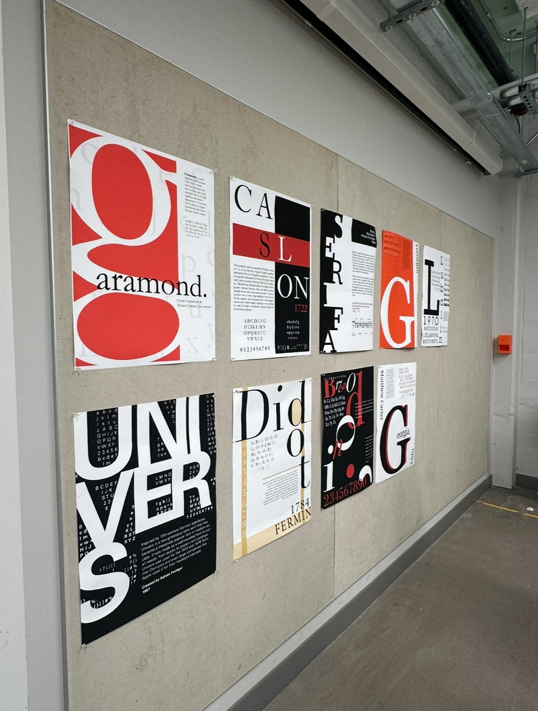
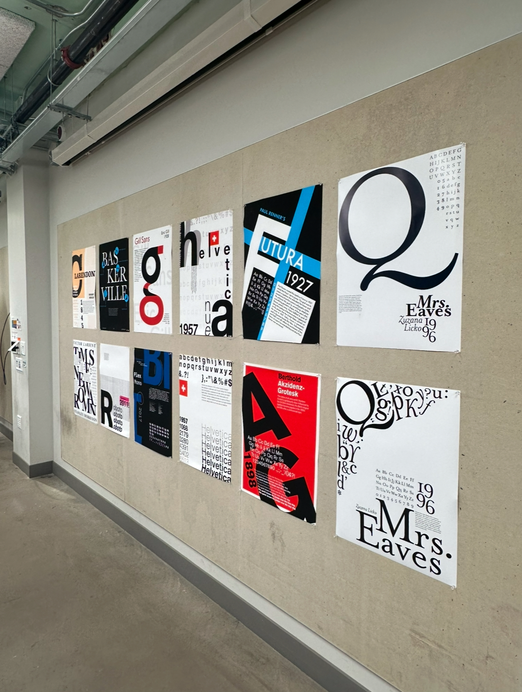

Typeface Poster
Initial Research About Garamond
French-type designer Claude Garamond designed the classic serif font known as Garamond in the 16th century. Garamond is mainly used for books, scholarly publications, and formal printed items because of its smooth curves and timeless readability. It is a well-liked option for branding, journalistic layouts, and high-end design projects because of its elegant and traditional appearance.

Sketches
My sketches emphasize experimenting with typographic arrangement and placement by examining a wide range of layouts.
I rotated individual letters to provide dynamic visual appeal and experimented with font sizes to create hierarchy.
The goal was to showcase Garamond's beauty while successfully conveying the poster's content.



Iterations


I created three versions of the poster, experimenting with different placements, font sizes, and the overlapping of individual letters together. I wanted to showcase Garamond's unique anatomy and found the loop and link of lowercase G interesting, so I made that the main focus for my posters. I was also interested in seeing how different letters can interact with each other, hence the overlapping of certain letters.
Design Gallery



Feedback Received: Incorporate more weights and include the italic version of Garamond. Garamond’s italics are truly exceptional, especially the distinctive shapes of the “a” and “e.” Consider adding more variety to highlight these features.
Lessons and Opportunities
Investigation of Creative Layouts: This project allowed me to test different typographic arrangements to see how design decisions could best showcase Garamond's visual hierarchy through various approaches. I want to use different font styles and see what unique designs I can create.
Knowledge of Historical Context: After learning the contexts, I gained a greater appreciation and understanding of the history of Garamond, its maker, and its ongoing impact on modern typography and design aesthetics.
Practice of technical abilities: I noticed I was becoming more proficient with InDesign, altering the type with design tools, including changing letter size, spacing, and rotation, to create a unified and eye-catching composition. I would love to explore InDesign further because there are so many functions I want to incorporate in future designs.